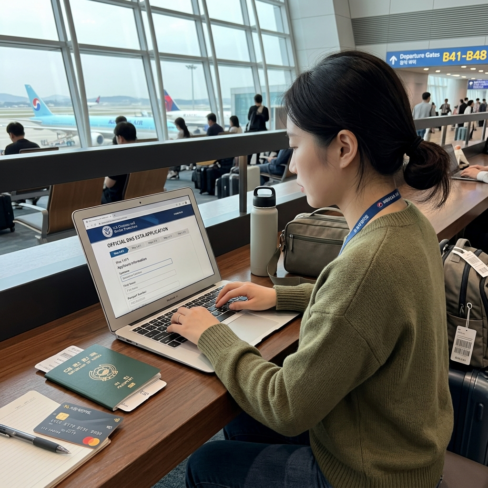
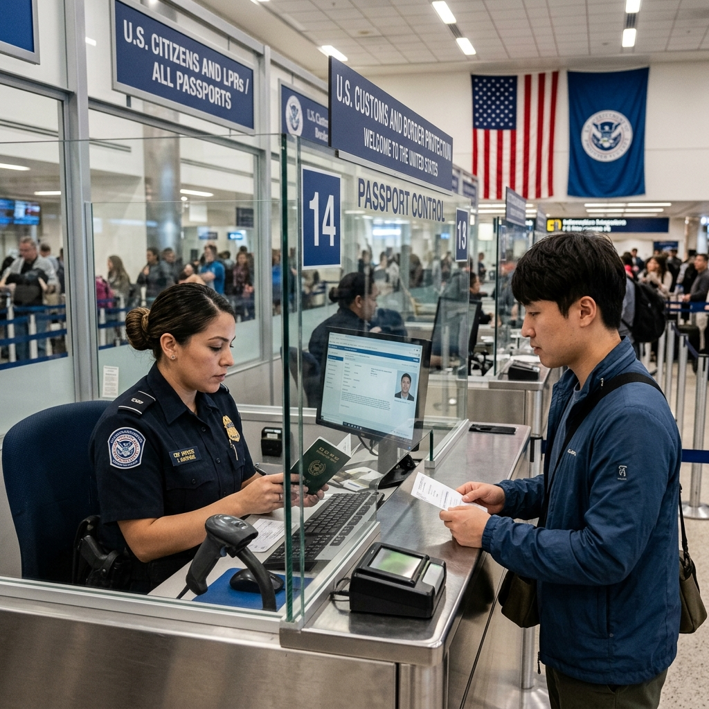
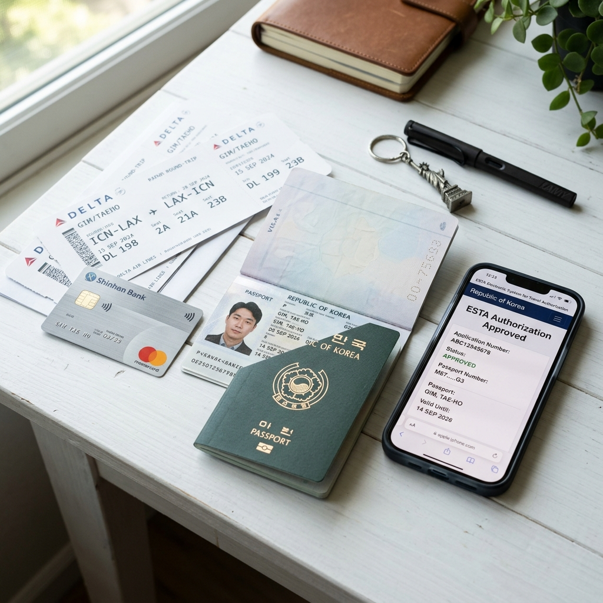

저도 처음 미국에 갈 때 "비자는 안 받아도 된다는데, 그럼 정말 아무것도 안 해도 되나" 싶어 출발 며칠 전까지 헷갈렸습니다.
결론부터 드리면, 한국 여권 소지자는 비자 대신 ESTA(전자여행허가)를 받아야 합니다.
직접 공식 사이트에서 신청해보니 절차 자체는 10분 안팎으로 단순했지만, 영문 주소 입력이나 보류(Pending) 같은 데서 한 번씩 멈칫했던 기억이 있습니다.
수수료는 미화 40달러입니다(2025년 9월 30일 인상 기준).
이 글에서는 ESTA가 무엇인지, 어떻게 신청하는지, 유효기간은 얼마인지를 제가 직접 겪은 순서대로 정리했습니다. 단, 자격·수수료·정책은 수시로 바뀌니 실제 신청은 반드시 공식 사이트 기준으로 확인하세요.
출처: 미국 세관국경보호청(CBP) 공식 사이트 esta.cbp.dhs.gov.
비자와 ESTA는 전혀 다른 허가 방식입니다.
비자는 미국 대사관이나 영사관을 직접 방문해 인터뷰를 거친 뒤 여권에 발급받는 공식 허가입니다.
서류 준비와 예약, 인터뷰, 처리 기간까지 상당한 시간과 노력이 필요합니다.
ESTA는 인터넷으로 신청하는 전자 허가로, 대사관 방문 없이 온라인에서 진행됩니다.
한국은 2008년부터 미국 비자면제 프로그램(VWP)에 가입되어 있어, 한국 전자 여권 소지자는 관광·출장 목적의 단기 방문에 ESTA를 이용할 수 있습니다.
체류 기간은 90일 이내로 제한됩니다.
단, ESTA 허가를 받았다고 해서 반드시 입국이 보장되는 것은 아닙니다.
미국 현지 공항에서 CBP 관원의 최종 심사를 통과해야 실제 입국이 허가됩니다.

ESTA 신청 수수료는 미화 40달러입니다.
2025년 9월 30일부터 기존 21달러에서 현재 금액으로 인상되었으며, 2026년에도 동일하게 적용 중입니다.
결제는 신용카드 또는 체크카드로 진행되고, 환율에 따라 한화 결제 금액이 달라집니다.
반드시 공식 사이트에서 직접 신청하세요.
검색 결과 상위에 뜨는 비공식 대행 사이트들은 공식 수수료를 크게 초과하는 금액을 청구합니다.
심지어 개인정보 유출 피해가 발생한 사례도 있으니 주의해야 합니다.
ESTA 공식 사이트 주소는 esta.cbp.dhs.gov이며, '.gov'로 끝나는 미국 정부 도메인인지 확인하세요.
공식 사이트(esta.cbp.dhs.gov)에 접속 후 한국어를 선택합니다.
'새 신청서 작성'을 클릭해 절차를 시작합니다.
심사 결과는 세 가지로 나뉩니다.
허가(Approved): 미국행 항공기를 탑승할 자격이 주어진 상태입니다.
단, 실제 입국은 현지 공항 심사에서 다시 확인됩니다.
보류(Pending): 추가 심사가 필요한 상태입니다.
72시간 이내에 최종 결과가 나오므로 기다리세요.
항공권 예약 직후 ESTA를 신청하는 것을 권장하는 이유가 여기에 있습니다.
거부(Denied): ESTA를 통한 입국이 불가한 상태입니다.
거부 시에는 주한 미국 대사관에서 정식 비자를 신청해야 합니다.

ESTA 허가의 유효기간은 승인일로부터 2년입니다.
단, 여권 만료일이 2년보다 먼저 도래하면 여권 만료와 함께 ESTA도 만료됩니다.
유효 기간 중 여러 번 미국을 방문할 수 있지만, 매번 90일 이내로 체류해야 합니다.
새 여권을 발급받으면 기존 ESTA는 구 여권에 연결되어 있어 사용 불가합니다.
새 여권으로 ESTA를 다시 신청해야 합니다.
이름 변경이나 새로운 범죄 기록이 생긴 경우에도 재신청이 필요합니다.
온라인에서 'ESTA 신청'을 검색하면 공식 사이트처럼 보이는 비공식 대행 사이트가 섞여 있습니다.
이들은 공식 수수료(40달러)를 크게 초과하는 금액을 청구하고, 개인정보를 위험에 노출시킬 수 있습니다.
식별법: 공식 사이트 주소는 반드시 esta.cbp.dhs.gov입니다.
'.gov'가 없거나 다른 도메인이라면 비공식 사이트입니다.
'빠른 처리 보장', '승인 확정' 같은 과장 광고 문구도 비공식 사이트의 특징입니다.
항공사나 여행사 이메일에 포함된 링크도 한 번 더 확인하는 습관을 갖는 것이 안전합니다.
신청 전 아래 항목들을 미리 준비하면 작성이 훨씬 수월합니다.
준비물: 유효한 한국 전자여권(출국 예정일 이후 6개월 이상 유효해야 함), 신용카드 또는 체크카드, 미국 내 첫 숙박지 주소(호텔명과 영문 주소), 개인 이메일 주소.
주의할 점: 여권 번호를 한 글자라도 잘못 입력하면 심사에 영향을 줄 수 있습니다.
반드시 여권 원본을 눈앞에 두고 입력하세요.
또한 2011년 이후 이란·이라크·북한 등 특정 국가를 방문한 이력이 있다면 ESTA 자격이 제한될 수 있으니 사전에 미국 대사관에 문의하세요.

| 항목 | 내용 |
|---|---|
| 수수료 | 미화 40달러 (2025년 9월 30일~) |
| 공식 신청 주소 | esta.cbp.dhs.gov (한국어 제공) |
| 유효기간 | 승인 후 2년 (여권 만료 시 동시 만료) |
| 1회 체류 | 최대 90일 |
| 처리 시간 | 수 분 ~ 72시간 (보류 시) |
| 권장 신청 시점 | 탑승 72시간 전 이상 (항공권 예약 직후 권장) |
Q. 가족 여럿이 함께 가면 한 번에 신청되나요?
A. 각 개인이 별도로 신청해야 합니다. 미성년자도 본인 여권으로 부모가 대신 신청할 수 있습니다.
Q. 새 여권을 발급받았는데 이전 ESTA를 계속 쓸 수 있나요?
A. 사용 불가합니다. 새 여권으로 ESTA를 새로 신청해야 합니다.
Q. 거부를 받으면 재신청하면 되나요?
A. 거부 사유가 해소되지 않은 상태에서 재신청해도 같은 결과가 나올 가능성이 높습니다. 거부 시에는 미국 대사관 비자 신청을 알아보세요.